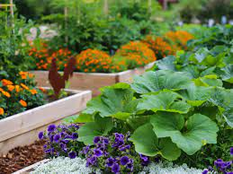
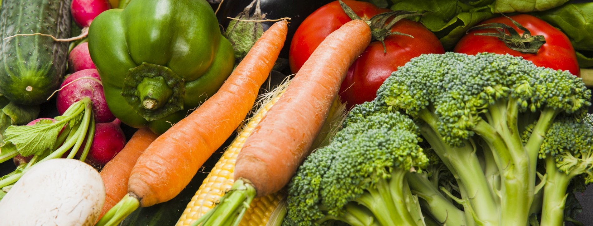
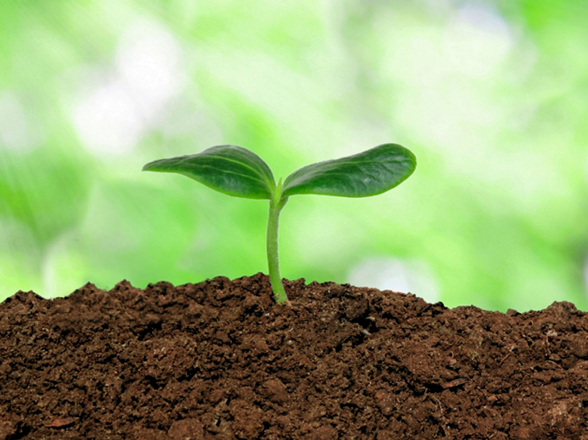
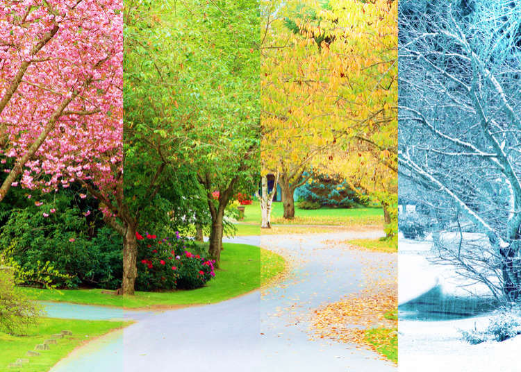
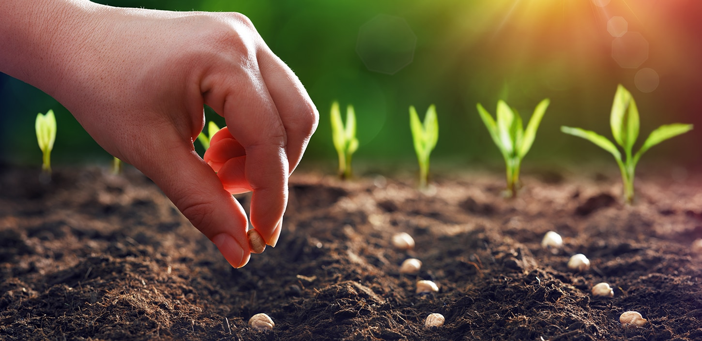
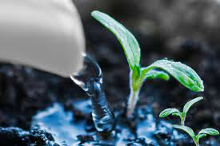
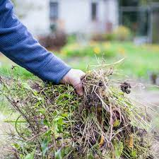
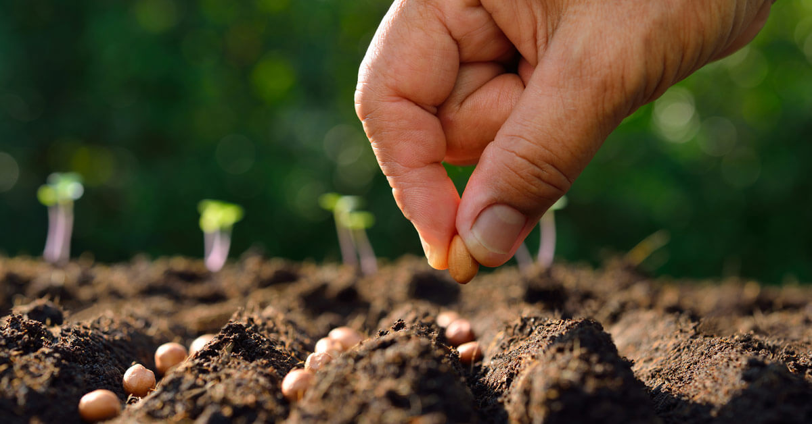
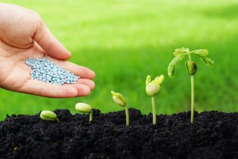
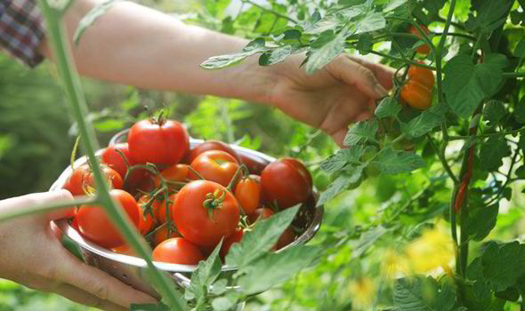

Choose a location for the garden that has plenty of sun, ample space and close proximity to your hose or water source. Find a level area to help prevent erosion.
Decide what produce to include based on your climate, space, tastes and level of expertise. Newcomers may want to consider some of the easier crops to grow, like carrots, beans, cucumbers, peppers and lettuce.
Mix compost and natural fertilizers into your garden to condition the soil for your plants. Garden-supply stores can test the acidity of your soil and recommend supplements, or you can simply purchase specially made soil in bulk.
Growing conditions and ripening cycles are different depending on the plant and the season, so you should not sow all the seeds at the same time. Planting dates can be found on seed packets. Review the ideal conditions for each veggie you want to plant before creating a gardening schedule.
Place your seeds or plants into the soil, following the depth and spacing directions carefully.
Gently spray the garden with water to keep the soil evenly moist throughout the growing season. Purchase a spray nozzle for your hose so you can create a gentle rain-like mist for your garden.
Mulching is the most effective way to prevent weeds. Add a 2- to 4-inch-thick layer of organic mulch to your garden to keep the weeds from overtaking your crops. If weeds do appear in the garden, grab them low on their stems and yank sharply, making sure to extract the entire root.
Check the spacing guide on the seed packets and be sure to remove crowded seedlings right away.
Lightly till the soil by hand and add fertilizer to keep it rich. You can purchase prepared garden fertilizer or make your own from items like Epsom salt, eggshells, fish tank water and kitchen compost.
Harvest vegetables when they’re young and tender—but only pick them when you plan to use them. Pull root crops as soon as they reach edible size. Collect leaf crops by cutting them to within 2 inches of the ground. Finally, enjoy your harvest!
